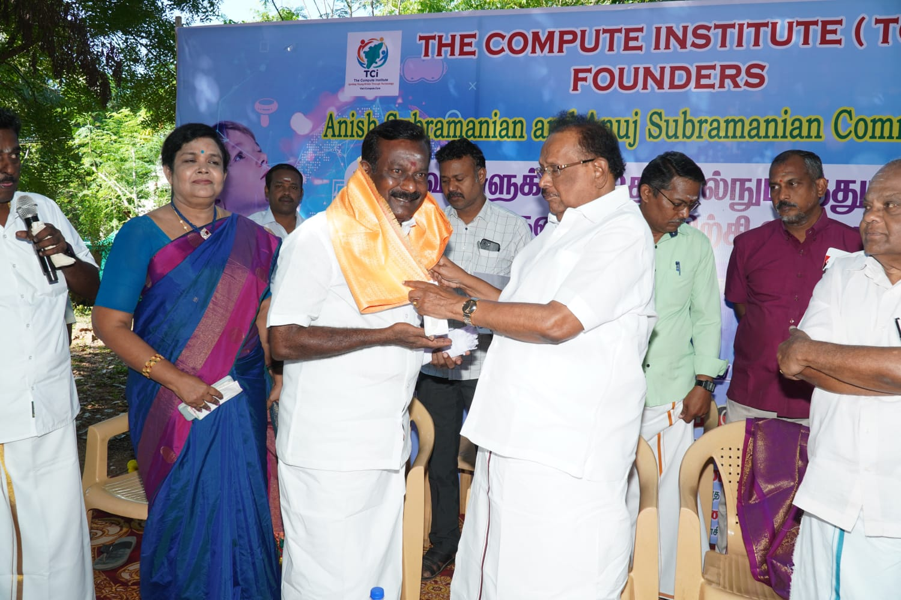
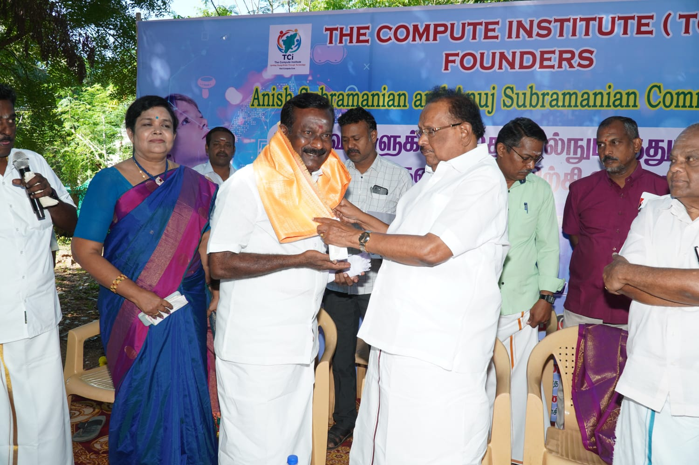

Our Events
The Compute Institute (TCi) is proud to announce the inauguration of a new AI-enabled computer lab, a community initiative led by its founders, Anish Subramanian and Anuj Subramanian.
The inauguration event took place on Friday, October 3, 2025, at 9:00 AM at the Govt. Higher Secondary School, in Panayapatti (Pudukottai District).
We are honored to have had the Honorable Tamil Nadu Minister for Natural Resources, Mr. S. Ragupathi, officiate the ceremony. He was joined by local educators, dignitaries, and community leaders.
This initiative aims to empower rural students by introducing Computer Science as a standard subject for grades 6 through 10. TCi will donate computers and provide ongoing support with a dedicated curriculum and teaching staff, enabling students to gain vital skills in modern technology, including resposible AI learning through a strong collaboration with local volunteers and educators.
Photo Highlights
Moments from Panayapatti and our partner schools — inaugurations, first computer lessons, and students exploring technology for the very first time.


 
